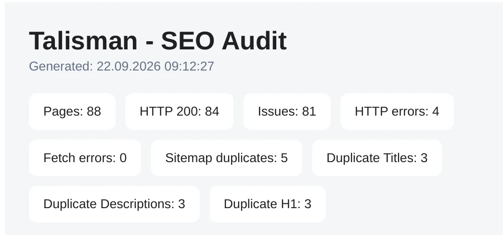
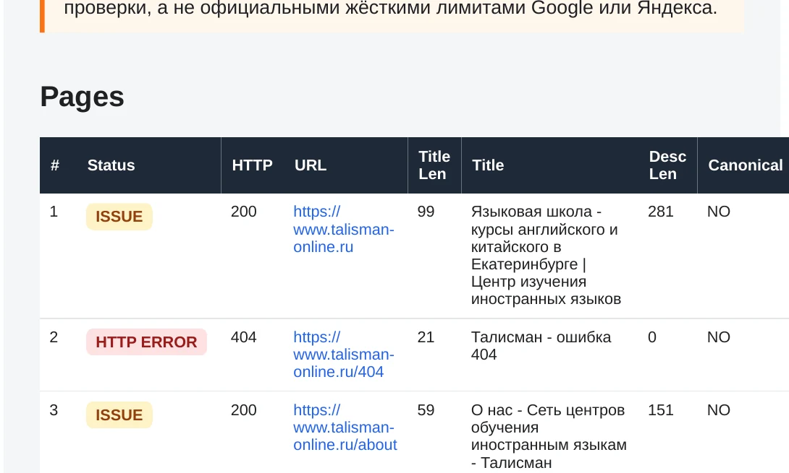

Это независимый SEO-аудит в формате образца работы по публичной версии Talisman Online, выполненный 22.09.2026. Автоматические результаты уточнялись по конечным HTTP-ответам, HTML и выборочным проверкам действующих страниц. Ниже приведены наблюдения на дату аудита и рекомендации. Подтверждений внедрения и измерений после него нет.
Задача
Проверить техническое состояние и внутреннюю оптимизацию публичной части сайта, найти подтверждённые проблемы и отделить их от ложных срабатываний, неоднозначных сигналов и вопросов, требующих дополнительной проверки. Клиентский бриф или целевые бизнес-показатели для этой работы не заявляются.
Методика
Проверялись записи карты сайта, конечные коды HTTP-ответов, цепочки редиректов и внутренние ссылки. Для загруженных страниц анализировались заголовки страниц, метаописания, H1, теги canonical, Schema.org / JSON-LD и текстовый контент. Отдельные выводы сверялись вручную с действующими страницами, видимым интерфейсом и исходным HTML. Автоматический сигнал сам по себе не считался доказанной SEO-ошибкой: сначала уточнялись конечный URL, контекст элемента и границы проверки.
Что проверялось
В проверенной карте сайта было 93 записи для 88 уникальных URL. Конечный HTTP 200 получили 84 из этих 88 URL. Из HTML проверенных страниц карты сайта извлечено и рассмотрено 4 940 внутренних ссылочных вхождений; это не 4 940 уникальных адресов и не полный граф сайта. Наличие JSON-LD проверялось в рамках тех же 88 уникальных URL. Все числа ниже относятся к проверке 22.09.2026, а не к текущему состоянию сайта.

Ключевые находки
1. Карта сайта содержала дубли и URL с ответом, отличным от HTTP 200
Из 93 записей карты сайта только 88 были уникальными: пять URL встретились по два раза. Среди 88 уникальных адресов после перехода к конечной странице 84 ответили HTTP 200, три - HTTP 404, один - HTTP 500. В частности, /404, /adults и /kids вели к 404, а /adults/master-classes - к 500. При этом 25 URL из карты сайта проходили через редирект до финального адреса. Это отдельный показатель, не число внутренних ссылок через редиректы.
Карта сайта тем самым включала повторы, неработающие назначения и нефинальные URL. Рекомендация - оставлять в ней канонические индексируемые адреса с прямым ответом 200: убрать неактуальные страницы, восстановить нужные и исправить ответ 500, затем повторно проверить карту сайта. Причина серверной ошибки 500 и дальнейшая судьба этих адресов в аудите не установлены. Нельзя считать ошибочными все 93 записи.
2. Внутренние ссылки вели через редиректы
В ходе обхода рассмотрено 4 940 внутренних ссылочных вхождений. Из них 481 вхождение вело через редирект, но относилось к 39 уникальным исходным URL-источникам редиректов. Встречались цепочки от двух до пяти переходов; для /kids/podgotovka-k-ege в аудите отмечено пять переходов до конечной страницы курса. На части адресов наблюдался переход вида HTTPS без завершающей косой черты → HTTP с косой чертой → HTTPS с косой чертой. Он не приписывается всем 39 URL.
Такую перелинковку стоит исправлять на уровне источника ссылок: href должен сразу указывать на конечный HTTPS URL с согласованными именем хоста и завершающей косой чертой. Это избавляет переход от лишних запросов и упрощает обход. 481 - число вхождений в проверенных страницах, 39 - число уникальных исходных URL; ни одно из них не описывает весь ссылочный граф сайта. Отдельные 25 редиректящих URL из карты сайта относятся к другой совокупности.
3. Тег canonical отсутствовал на большинстве проверенных страниц с конечным HTTP 200
Тег canonical отсутствовал в исходном HTML на 81 из 84 проверенных страниц с финальным HTTP 200. Он был найден только на трёх страницах этой совокупности. Четыре URL с конечными 404 или 500 в знаменатель 84 не включались.
Для индексируемых страниц рекомендация - определить финальный основной URL и последовательно выводить один соответствующий тег canonical. Такой подход особенно полезен, когда у адреса есть варианты или редиректы. Проверка установила отсутствие тега именно в полученном исходном HTML; она не исключала отдельно HTTP-заголовок Link или добавление после выполнения JavaScript. Вывод не означает, что тег canonical отсутствует на каждом URL сайта, и не устанавливает фактический статус индексации.

4. Структурированные данные содержали несогласованности
JSON-LD был обнаружен на 55 из 88 проверенных URL из карты сайта. Само наличие или отсутствие JSON-LD не является ошибкой. Подтверждённые проблемы касались значений в существующей разметке. На 54 страницах BreadcrumbList использовал HTTP-адреса вместо конечных HTTPS URL. На 54 страницах объект Product указывал имя хоста без www, которое при проверке действующей страницы редиректило на www HTTPS.
Содержательно наиболее показателен другой пример: на 29 детских страницах курсов второй элемент BreadcrumbList вёл через /adults/, тогда как видимые хлебные крошки шли через /kids/. На странице /prices/ ItemList содержал HTTP URL; 20 уникальных целей были проверены на действующих страницах и переходили на HTTPS 200. Эти числа описывают разные группы страниц и объектов разметки, а не количество независимых причин. Рекомендация - исправить генераторы BreadcrumbList, Product и ItemList так, чтобы навигация совпадала с видимой страницей, а URL вели прямо на конечные адреса. Отсутствие иных возможных типов Schema.org автоматически не считается дефектом.
5. На /gift отсутствовали важные элементы внутренней оптимизации
Проверенная страница /gift получила конечный HTTP 200 и имела заголовок страницы, но в исходном HTML не нашлись метаописание, H1 и тег canonical. Это точечный пример внутренней оптимизации и метаданных, а не находка об отсутствующих свойствах Schema.org: источник не подтверждает таких свойств для этой страницы.
Рекомендация - добавить содержательное метаописание и H1 и определить канонический URL по финальному адресу, после чего повторно проверить ответ и HTML. Отсутствие тега canonical здесь согласуется с более широкой проверенной выборкой выше, но само наблюдение по /gift не переносится на все посадочные страницы. Данных для утверждения, что страница действительно «сиротская», также недостаточно.
6. Редакционная проверка качества выявила подтверждённые ошибки
Автоматический поиск текстовых кандидатов дополнялся проверкой действующих страниц и метатегов. В метаописании главной обнаружено «французкого» вместо «французского». Среди других подтверждённых примеров - «Заняти проходят» вместо «Занятия проходят» в метаописании, «Курс егэ» вместо «Курс ЕГЭ» в заголовке страницы и «предложеный» вместо «предложенный» в видимом редакционном тексте проверенных детских страниц.
Эти примеры показывают, почему текст и метаданные нужно проверять в контексте, а повторяющиеся ошибки исправлять в их источнике. Они не образуют заявленного здесь общего числа ошибок: агрегат рабочего документа требует отдельной сверки. Тексты пользовательских отзывов отделялись от редакционного контента. Кандидат «отввечает» был снят после проверки, поскольку на текущей для аудита видимой странице отображалось корректное «отвечает»; его нельзя предъявлять как подтверждённую ошибку.
Что дополнительно проверялось
Контрольные проверки показывают, почему не каждый результат краулера стал самостоятельной находкой.
HTTP 0 из краулера
Ранний PowerShell-сканер записал HTTP 0 для /404 и /adults, поскольку не смог получить ответ и HTML. Повторная проверка через curl.exe с переходом по редиректам установила конечный HTTP 404 для обоих URL. Случайный несуществующий адрес тоже возвращал настоящий 404. Значение HTTP 0 было сбоем сбора данных, а не отдельной подтверждённой проблемой сайта. Метаданные из тех неудачных строк не использовались.
Скрытая строка test
При разборе исходного HTML строка test выглядела повторяющейся текстовой ошибкой. Финальная проверка нашла её в .footer__search--results с вычисленным значением display: none; она отсутствовала в видимом тексте document.body.innerText и дереве доступности. Поэтому сигнал не стал находкой о видимом пользователям контенте. Его возможное влияние на индексацию эта проверка не устанавливает.
Метаданные после редиректов
Первичный прогон нашёл группы одинаковых заголовков страниц, метаописаний и H1 среди исходных URL из карты сайта. Сравнение с конечными адресами показало, что часть исходных URL ведёт на одну и ту же страницу. Поэтому совпадения нельзя автоматически объявлять независимыми дублями контента. Исходный отчёт не связывает каждую группу с точной парой URL; отсутствие любых настоящих дублей также не доказано. Для отдельного вывода нужна дедупликация по финальному URL.
Приоритеты
High Ошибка сервера в карте сайта
- Страница с ответом HTTP 500 в sitemap
Medium Сигналы для обхода и индексации
- Дубли и URL не 200 в карте сайта
- Внутренние ссылки через редиректы
- Нет canonical на 81 из 84 страниц
- Несогласованная разметка, прежде всего хлебные крошки детских курсов
Low Редакционные правки
- Опечатки в текстах и метаданных
Для страницы /gift приоритет в аудите не назначался. Это группировка исправлений внутри аудита, а не прогноз бизнес-эффекта.
Рекомендации
- Очистить карту сайта. Убрать повторы и URL с конечными 404/500, заменить редиректящие адреса финальными индексируемыми URL.
- Обновить внутренние ссылки. Каждый href должен сразу вести на конечный HTTPS-адрес.
- Вывести canonical. Добавить корректный тег на индексируемые финальные страницы и проверить результат в HTML.
- Согласовать разметку. Привести BreadcrumbList, Product и ItemList к фактическим URL и видимой навигации.
- Доработать /gift. Добавить метаописание, H1 и тег canonical.
- Исправить редакционные ошибки. Поправить подтверждённые опечатки в тексте и метаданных.
Это рекомендации по результатам аудита, а не перечень внедрённых изменений.
Ограничения
Аудит отражает публичную версию сайта на 22.09.2026; доступа к CMS, админке и серверу не было. Обход карты сайта и внутренних ссылок из проверенных страниц не равен обследованию каждого URL и всего ссылочного графа. Отдельные вопросы - назначение /franchise, кандидаты на сиротские страницы, пустые href, региональные URL, трактовка lastmod и общий агрегат редакционных ошибок - оставлены для перепроверки и не представлены как подтверждённые проблемы. Полученный HTML не описывает возможные изменения после клиентского взаимодействия. Наблюдения не следует автоматически переносить на будущую версию сайта.
Статус работы
Статус: Образец работы. Аудит и рекомендации подготовлены. Подтверждения внедрения рекомендаций и измерения после внедрения отсутствуют. Поэтому здесь нет заявлений о росте трафика, позиций, заявок, продаж, конверсий или иного измеренного эффекта этой работы.